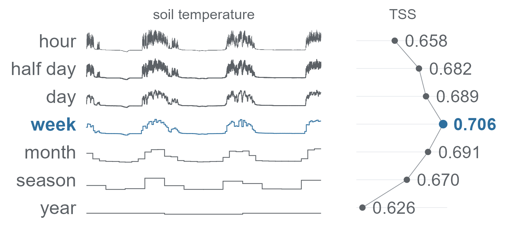

choosing the time scale of a sensor record

timesift compares time scales to find which gives the best predictions from a sensor record. For example, you can use three years of hourly soil temperature to predict which plant species grow at a plot, and compare models trained on daily, weekly or monthly summaries.
A grain is the time interval used to summarise the readings, such as a day, week or month. timesift groups readings into these calendar intervals and calculates a summary, such as the mean, for each one. It fits each model at each compatible grain and evaluates them on the same held-out observations. You can compare their predictions, select a grain using the training data, or combine predictions from several models in an ensemble.
timesift lets you:
-
Calendar grains and lookbacks. Summarise sensor readings by half-day, day, week, month, season or year, using statistics such as the mean or the coldest and warmest daily mean. You can also use the original readings or
lookback()to summarise a period ending at each observation date. - Species distribution learners. Predict species distributions with elastic net, stepwise GLMs, classification trees, random forests, boosting, Maxent, surface range envelopes, MARS, flexible discriminant analysis, GAMs and neural networks, or add your own model.
-
Evaluation scores. Evaluate model selection and ensembles on held-out data: each training fold chooses the grain and estimates the ensemble weights, and the matching test fold scores the predictions. Selecting the TSS threshold on the same data used to evaluate it can inflate reported skill.
tss_inflation()estimates this bias for your design, whileimplied_skill()helps interpret the reported score. - Python and R. Run analyses in R or Python. Both interfaces use the same C++ code for data preparation and baseline models, giving matching arrays and model fits.
The model implementations are based on published methods and tested against reference packages including glmnet, MASS, rpart, earth, mda, mgcv, nnet, maxnet and biomod2. R and Python also use the same 257 checksums to test that they produce identical binned arrays. Cite the timesift version to identify the implementations and defaults used in an analysis.
Installation
R
timesift needs R 4.1 or later. The CRAN release installs from a binary on Windows and macOS and needs no build tools there:
install.packages("timesift")The development version compiles C++ code, so it needs a compiler:
| Operating system | Build tools |
|---|---|
| Windows | Rtools matching your R version |
| macOS | xcode-select --install |
| Debian / Ubuntu | r-base-dev |
Check that R finds them:
pkgbuild::has_build_tools(debug = TRUE)Then install from GitHub:
# install.packages("pak")
pak::pak("gcol33/timesift")The C++ code needs no system library: it uses only the C++ standard library, including its threads, and cpp11 headers at build time.
Neural learners in R
cnn(), rescnn() and mlp() run on torch; every other learner runs without it. torch is an R package plus the LibTorch library, which it downloads once:
install.packages("torch")
torch::install_torch(timeout = 600)Check that it loads, and whether it found a graphics processor:
torch::torch_is_installed()
torch::cuda_is_available() # NVIDIA
torch::backends_mps_is_available() # Apple SiliconThis installs the processor build on Windows and Linux and the Apple Silicon build on macOS, where torch uses the graphics processor through MPS. An NVIDIA graphics processor needs the CUDA build, set up in Installing torch. train_control(device = "auto"), the default, takes a graphics processor wherever torch finds one and the processor otherwise.
Python
The Python package has wheels for Linux, Windows and macOS and needs Python 3.11 or later:
pip install timesift
# with the torch encoders, the grain contrasts and the plots
pip install "timesift[torch,contrasts,plot]"On Linux the torch this installs carries CUDA; on Windows it runs on the processor only, and the CUDA build comes from PyTorch’s own index, also in Installing torch. Check it with:
Usage
- Prepare two tables:
targets, with one row per sampling unit and its responses, andseries, with the time-stamped readings for those units. - Call
timesift()with the response columns, the identifier shared by both tables, the time column and the grains to compare. - Inspect the scores, then call
predict()for new sampling units.
This example uses simulate_records() to generate a year of readings from 150 sensors, sampled every three hours. The four responses depend on seasonal values in the simulated record.
library(timesift)
sim <- simulate_records(n = 150, mechanism = "season", variables = 4,
prevalence = 0.3, auc = 0.9)
targets <- data.frame(unit = rownames(sim$y), sim$y)
fit <- timesift(targets, sim$readings, y = -unit, id = unit, time = time,
sift = grains("day", "week", "month", "season"))
fit
#> timesift 150 targets, 4 responses, 10-fold random CV, roc_auc
#>
#> candidates, scored on the outer folds
#> candidate mean won responses
#> elasticnet / day 0.553 0 separate
#> elasticnet / season 0.571 0 separate
#> elasticnet / week 0.612 0 separate
#> elasticnet / month 0.712 4 separate
#>
#> procedure, chosen and weighted inside each outer training fold
#> selected 0.712 se 0.077
#> ensemble 0.712 se 0.077
#> selected elasticnet / month in 10 of 10 folds
#>
#> choice on every target elasticnet / month
#> weights on every target elasticnet / month 1.00targets holds one 0/1 column per response and the identifier, here unit; series holds that identifier, a date-time column and the values, one row per reading. y takes tidyselect expressions such as starts_with("sp_"). A table with a missing reading in a bin is refused, and coverage() shows which unit and bin lack readings.
A candidate is a model fitted at one grain. The default model is elasticnet(). The candidate rows show how each pairing performed in cross-validation: each fold is held out in turn for evaluation. Selecting the highest score from these rows uses the evaluation data to choose a candidate.
Use the selected and ensemble rows to report predictive performance. For these rows, candidate selection and ensemble weighting happen within each training fold. The held-out fold then evaluates the resulting predictions.
predict(fit, new_targets, new_series) summarises the new readings at each required grain and predicts with the ensemble trained on all targets. Use type = "binary" to convert predicted probabilities to presence or absence. The threshold for each response is estimated from out-of-fold predictions.
The same run in Python:
import timesift as ts
sim = ts.simulate_records(n=150, mechanism="season", variables=4,
prevalence=0.3, auc=0.9)
targets = {"unit": sim.y.units}
targets.update(zip(sim.y.variables, sim.y.values.T))
fit = ts.timesift(targets, sim.readings, y=list(sim.y.variables),
id="unit", time="time",
sift=ts.grains("day", "week", "month", "season"))
print(fit)The grain in an alpine study
timesift was built for a study of 894 alpine plots on the Schrankogel, Austria, with 101 plant species and three years of hourly soil temperature per plot. The figure at the top shows that run:
- The hourly record was the best input for none of three network architectures. The convolutional network scored 0.048 TSS lower on it than on its best grain.
- Skill peaked at the weekly mean and fell from monthly on, 0.080 lower at yearly.
- The coldest and warmest day of a bin carried more than its mean, by 0.006 weekly up to 0.046 yearly.
- A fully connected network on the same series scored level with a penalised logistic model on 188 hand-built features (-0.002 TSS, p = 0.63).
inst/reproduce/schrankogel.R runs that grid from the Zenodo deposit and checks the plot, species, cell and bin counts before fitting anything. Its README compares every number with the paper.
Reading a record at several grains
grains("day", "week", "month") names a set of grains to compare, and grains("auto") takes every named grain that gives the record at least two bins. A learner runs across the whole set, or at one grain when it is given one, as in cnn(data = grain("week")).
Bins follow the calendar: months have 28 to 31 days, and weeks start on Monday. year_start sets the start of the year, for example for a hydrological year. You can define a custom calendar with a function of the reading times, such as seasons beginning at the equinoxes.
min and max give the lowest and highest individual reading in each bin. cold_day and warm_day first calculate daily means, then return the lowest and highest daily mean within the bin.
grain_matrix() and lookback_matrix() return the binned arrays, [unit, bin, channel], without fitting anything. Representing a record covers every grain and statistic.
Choosing a grain and combining candidates
grain_ladder() fits one learner at every grain and shows where skill levels off. grain_contrasts() compares every grain with a learner’s best one, and paired_contrast() compares two candidates on matched cells. select_grain() chooses the grain inside the training data and scores the whole procedure. Finding the grain runs them on a record with a known answer.
ensemble() stacks the candidates with non-negative weights summing to one, fitted on their out-of-fold predictions alone. project() maps a fit onto rasters and range_change() compares two projections. Ensembles, thresholds and maps goes from a scored run to maps.
TSS and threshold selection
The true skill statistic (TSS) measures how well a model distinguishes presences from absences at a given prediction threshold. Choosing the threshold that maximises TSS on the evaluation data can inflate the score, especially for species with few presences. For the Schrankogel design, the estimated inflation is 0.110 on average when the true skill is 0.60.
tss_inflation() estimates this bias for your presence counts. implied_skill() estimates the underlying skill consistent with an observed score. By default, runs are scored by the area under the receiver operating characteristic curve (AUC), with TSS also reported.
Documentation
Start with Choosing how a record is read: one path from two tables to a scored comparison and predictions. Every code block has an R and a Python version; the page opens in Python through this link.
- Representing a record: grains, statistics, calendars, lookbacks and the arrays they give.
- Learners: the shipped learners, training settings, tuning and a learner of your own.
- Finding the grain: ladders, paired contrasts and nested selection.
- Ensembles, thresholds and maps: stacking, prediction, thresholds and projection onto rasters.
- Coming from biomod2: each biomod2 model and its timesift learner.
- Troubleshooting: the errors a run raises and how to fix them.
- The representation contract: what R and Python share and what each carries.
- R reference and Python reference: every function, grouped by job.
Getting help
Questions and bug reports go to the issue tracker. With a bug report, include a small reproducible example made with reprex.
Contributing
Building from a checkout, the test suites and the rules for the shared fixtures are in CONTRIBUTING.md.
Support
“Software is like sex: it’s better when it’s free.” — Linus Torvalds
I’m a PhD student who builds R packages in my free time because I believe good tools should be free and open. I started these projects for my own work and figured others might find them useful too.
If this package saved you some time, buying me a coffee is a nice way to say thanks. It helps with my coffee addiction.
Citation
To cite timesift in publications use:
Colling G (2026). _timesift: Learn Predictive Representations of
Time-Varying Data_. R package version 0.6.0,
<https://gillescolling.com/timesift/>.BibTeX: